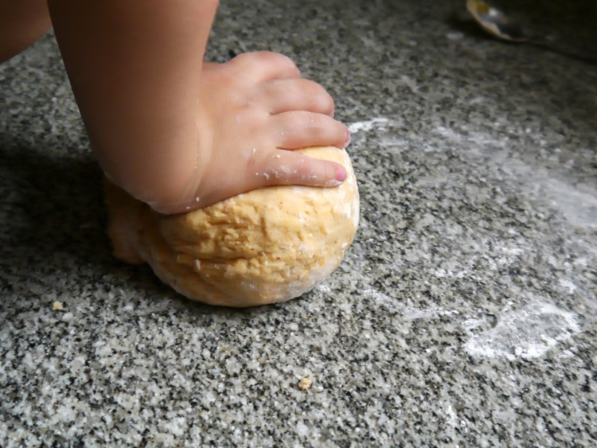

Masa para ravioles caseros paso a paso
31 de octubre de 2015
Hola muñequis, ¿qué les agarró que quieren hacer ravioles caseros? ¿les parece muy lindo, no?. Se sienten inspirados, tienen tiempo y buscan la receta de masa para ravioles.
Vamos con ello!!
Ingredientes
Para unas 4 porciones
- 500 g. de harian
- 4 yemas
- 1 cdita. de sal
- 1/4 de taza de agua tibia
- 1 cda. de aceite de oliva
Cómo hacer masa para ravioles caseros
ya tenes todo? Manos a la obra!!
- Poner la harina y la sal en un bol en forma de corona. Agregar en el centro las yemas, el agua y el aceite. Pueden saborizar esta masa para ravioles, en mi caso le puse pimentón ya que iba a hacer estos fantásticos ravioles caseros de chorizo y espinaca.
- Mezclar hasta que quede una masa pegajosa y amasar por 10 minutos. A mí me ayudó Coco, que adora amasar. Les quedará una masa elástica y fina, que no se pega ni en las manos ni en la mesada. Muy amorosa esta masa para ravioles.
- Dejar reposar tapada con un repasador. Mientras tu masa para ravioles podés aprovechar para hacer el relleno. Porque si estás haciendo masa para ravioles tengo que suponer que vas a hacer ravioles, ¿no?
- Pasado este tiempo (una media hora), retirar la masa del bol y amasar 5 minutos más.
- Dividir la masa de ravioles en dos partes iguales.
- Estirar la primera parte con el palo de amasar hasta formar una pelicula de unos 2mm. de espesor. El grosor es importante ya que si te quedan muy gruesos no quedarán bien y si te quedan muy finos pueden abrirse durante la cocción. Reservar. Vale colgar la masa del respaldo de una silla, como hacía mi nonna. Y si la dejás sobre la mesada, qué envidia, cuánta mesada tenés.
- Repetir la operación con la otra mitad pero dejar en la mesada.
- Colocar cucharaditas de relleno bastante separadas entre sí hasta acabar el relleno (o la masa!). Si sobra relleno no desesperes: sobrará masa tras cortarla y podés volver a amasarla y hacer ravioles ad infinitum.
- Mojar los bordes de cada bolita de relleno con agua. Tapar con la masa reservada (la que está en la silla o en la otra parte de su fucking gran mesada) y presionar ligeramente con los dedos en las uniones para que se pegue. Tratar de que no quede demasiado aire dentro de cada raviol. Esto es importante porque sino se abrirán durante la cocción.
- Cortar con cortapastas o cuchillo cada raviol. Vean mi cortapastas: de la masa de jugar de mi hijo. Muy profesional. Vos que tenés tanta mesada seguro tenés cortapastas también.
- Separar cada raviol y presionar los bordes con un tenedor. Si sos neura como yo, podés emprolijar los bordes con un cuchillo, para que queden todos bien cuadraditos y parejos. Sino no hace falta. Reservar los ravioles hasta el momento de hervir.
- Cocer la pasta casera en agua hirviendo. Son unos 4-5 minutos. La mejor forma de saber cuándo están es probarlos, sobre todo los bordes. Si están listos los bordes, está el resto.